Dec 3 - 5, 2010
| We had the great pleasure of hosting our
friends Martin & Tonnie Beck for a weekend of fun and
excitement. This was their first weekend away from their
two-year-old daughter, Leila. As you can imagine, that part of the
trip was a bit hard on them. Martin is also a big fan of football,
so spending a college championship weekend in a home with no TV reception
was also difficult. Please don't ask him which one he missed the
most! J/K |
|
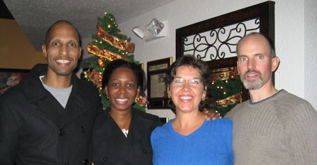 |
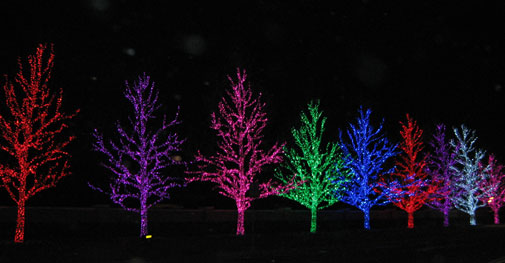 |
| Here we are after a great dinner at 1492, well all was great except
the Tacos el Carbon, but the rib eye made quite an impression. |
Now we're touring the Christmas lights of Heritage Hills and Chesapeake
Energy |
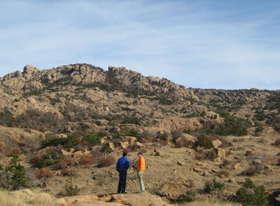 |
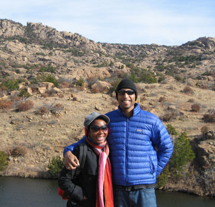 |
| On Saturday we headed for the Wichitas (Wichita Mountains Wildlife Refuge near Lawton, OK.) This is where Eric spends most weekends. |
It was very cold and VERY windy, but these tough Houston-ites never complained once about being frozen nearly solid. (I did though!) |
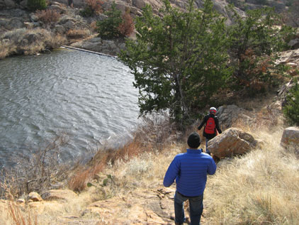 |
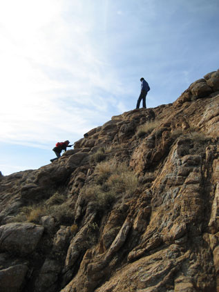 |
| Hiking | Climbing |
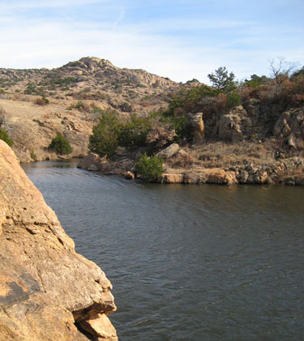 |
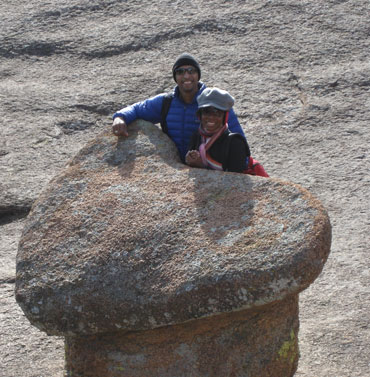 |
| Scenery | Becks in love at the heart rock - very nice! |
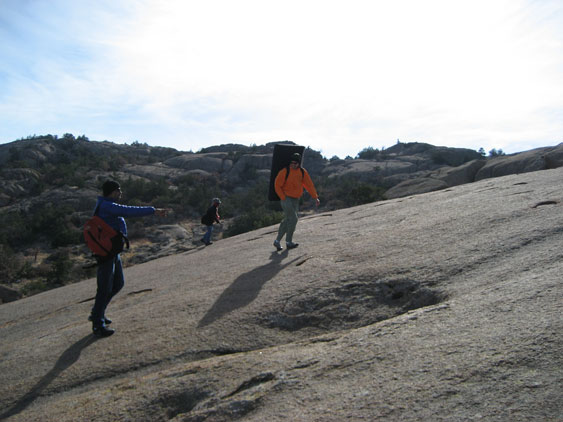 |
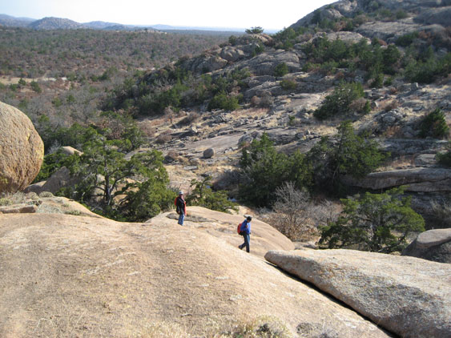 |
| Here we walk up to Elk Slabs, with Martin pointing out a feature of interest | Heading around to a boulder problem Eric worked on for awhile |
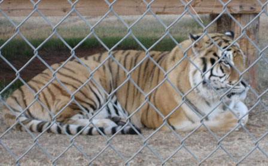 |
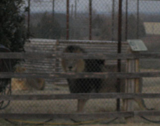 |
| After the Wichitas, we headed for the Tiger Safari in Tuttle, OK |
We had some excitement early on as this lion decided it thought Martin would make a great snack. It got very angry and wanted to come over that fence. |
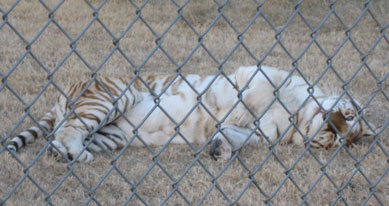 |
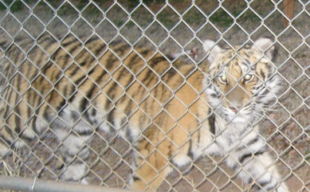 |
| Right next door was a tiger so laid back he wanted a belly rub |
This one was super-friendly. I imagine they raised him from a cub because you could tell he wanted to be petted. |
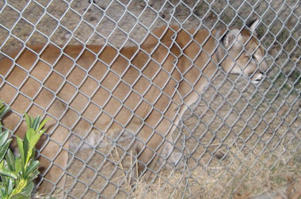 |
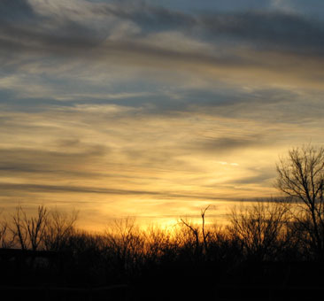 |
| This one was stalking the Great Dane they have running around the park. | We enjoyed a beautiful sunset as we did our tour |
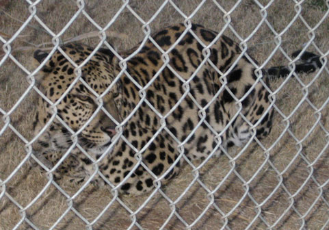 |
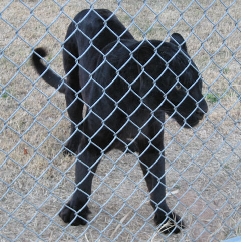 |
| This leopard wasn't very interested in us. |
I think the sign said to call this guy a black Leopard, not a Panther.
Whatever he's called, he wanted to play. Martin had him stalking and pouncing all around the cage. |
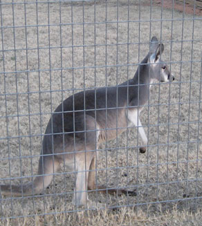 |
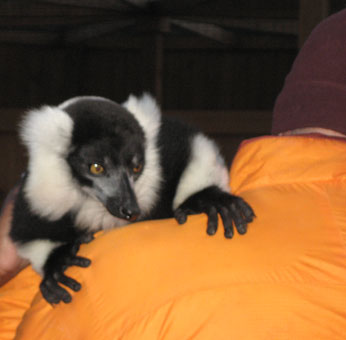 |
| Not sure if this was a Kangaroo or Wallaby or what, but he was very friendly.
|
Speaking of friendly, Eric got to hold this Lemur that clung to him for dear life. Only after Eric held him did the handler inform him that he had just gotten dirty in some "Otter juice." This is a nice term for excrement so the little guy stank to high heaven. Not sure if that coat will ever be the same... |
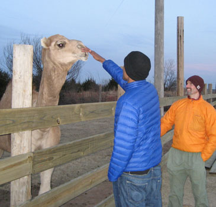 |
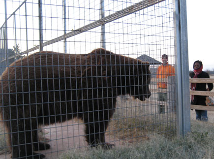 |
| And again with the friendly animals. This camel got so
amorous after Martin arrived that he tried to climb the fence. |
This Grizzly was so HUGE. He acted friendly but he could easily kill
you by accident at least 6 different ways. They say he can bust telephone poles. |
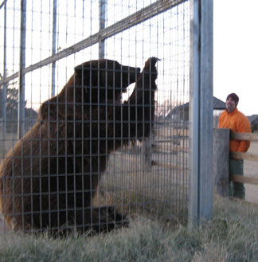 |
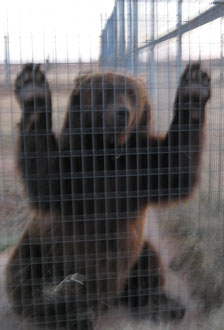 |
| He would follow you around wherever you walked like he wanted to play, but we were glad for the fences between us. |
Here he is from the front, I wanted to get a picture of the huge claws but it blurred. |
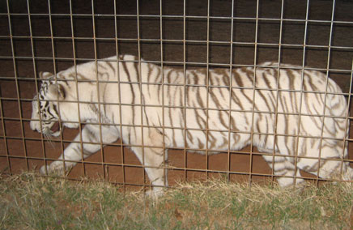 |
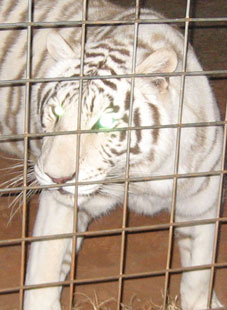 |
| Two white tiger twins, they were friendly too. |
I've had "Tiger Eye" jewelry before but it didn't glow like this! |
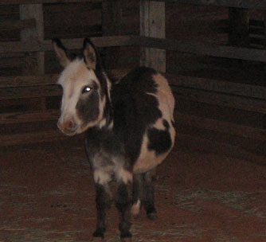 |
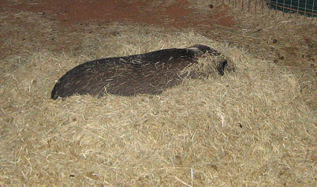 |
| We figure the donkey doesn't get many pictures taken of him so we didn't want him to feel left out. |
Here's a pig trying to hide from the frigid temps, he was smarter than we
were! |
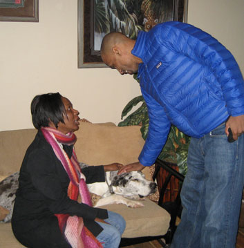 |
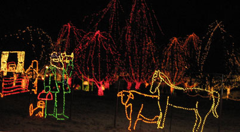 |
| China - the Great Dane, doing tough duty in the warm office. | And as if we hadn't crammed enough into one day, we also went to Chickasha to see the Festival of Lights. |
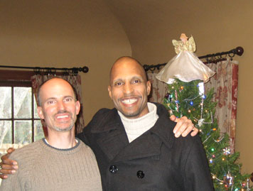 |
|
| On Sunday we did church, lunch, and relaxed a bit before sending them back to their little Leila. What a great trip! |
|